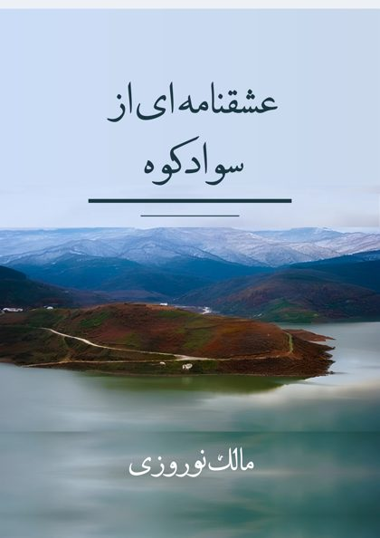

“O You from whom all being has come forth.” (Nezami)
Malek Norouzi
Writer
Toronto, Canada
Malek Norouzi is a writer. He worked as a manager in human resources, specializing in behavioral science.
He graduated from the University of Tehran in English. The Divan of Hafez was the second required textbook in his second year at maktab, the traditional school. That early required study led him to spend some seventy years of his life, alongside his professional work, researching Persian literature and the history of Iran and the world.
His first published work is this book, A Love Story in Savadkouh: the love poems of Taghi Lafouri Savadkouhi telling of his unfulfilled love for the girl he loved, Masoumeh Baker. The book also includes other poems by the same poet.
The author's own work is the translation of the poems from Tabari (Mazandarani) into Persian, with the analysis each one needs. He hopes the work will be welcomed by everyone: those whose feelings are in tune with the poet, and those who look for the reasons why. In the words of Hafez, may it be “accepted by people of discernment.”
Another book by the author, Lafour of Savadkouh: A Part of Iran's History, is forthcoming. Its contents will be useful to all Iranians and to the people of Mazandaran. In his words: “I will not hide my belief: I strongly recommend this book to everyone from Lafour.”
Both books are in Persian.
Works

A Love Story in Savadkouh
The life and poems of Taghi Lafouri Savadkouhi, with his poem in Tabari and a Persian translation. In Persian. Free e-book.
About the book and the free e-book →Lafour of Savadkouh: A Part of Iran's History
In preparation for publication. In Persian.
Contact
For book requests, questions or suggestions, email:
To support the author (readers outside Iran): paypal.me/MalekNorouzi